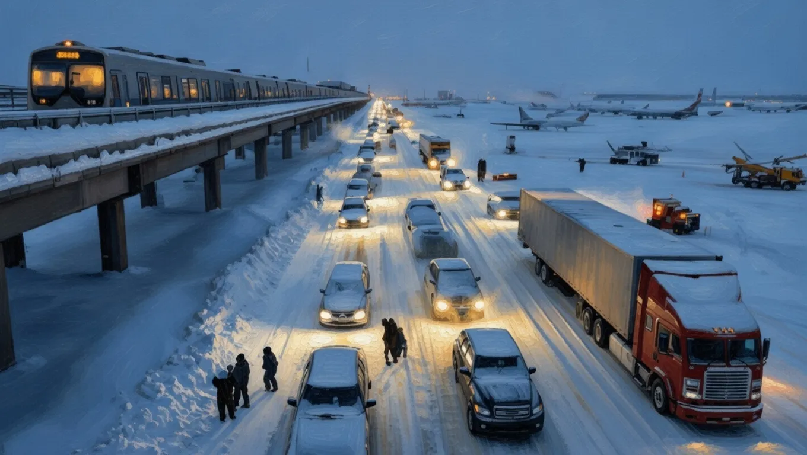

Urgent Warning: Massive Polar Vortex Disruption Threatens Widespread Travel Paralysis Across the US


The polar vortex is a circulation of strong winds that forms over the polar regions, typically during the winter months in the Northern Hemisphere. When this vortex is disrupted, it can lead to extreme cold air masses moving towards the equator, causing severe weather conditions. The current situation suggests that a massive polar vortex disruption is threatening to bring widespread travel paralysis across the US, with potential impacts on power grids and daily life.
This matters now because the US is still recovering from previous extreme weather events, and the country's infrastructure may not be fully prepared to handle another significant disruption. The National Weather Service and other meteorological agencies are closely monitoring the situation, providing updates and warnings to the public. Understanding the potential impacts of a polar vortex disruption is essential for individuals, businesses, and governments to prepare and respond effectively.
What the Forecast Shows
Current weather forecasts indicate that the polar vortex disruption will bring extremely cold temperatures to many parts of the US, with wind chill values potentially reaching as low as -50°F in some areas. The National Weather Service has issued warnings for several states, advising people to take necessary precautions to stay safe. The forecast also suggests that the disruption will lead to significant snowfall and ice accumulation, causing hazardous travel conditions.
The forecast models, including the Global Forecast System (GFS) and the European Centre for Medium-Range Weather Forecasts (ECMWF) model, are consistently showing a high likelihood of a significant polar vortex disruption. These models use complex algorithms and data from various sources, including satellites and weather stations, to predict future weather patterns. While there is some uncertainty in the forecast, the overall trend suggests a high impact event.
It is essential to note that forecast models are constantly being updated, and the situation can change rapidly. The National Weather Service and other meteorological agencies will continue to provide updates and refine their forecasts as more data becomes available.
Which Areas Are Affected
The areas most likely to be affected by the polar vortex disruption are the northern and central parts of the US, including states such as Minnesota, Wisconsin, Michigan, and Illinois. These regions can expect extremely cold temperatures, significant snowfall, and hazardous travel conditions. Other areas, such as the northeastern US, may also experience cold temperatures and winter weather conditions, although the impacts may be less severe.
Major cities, including Chicago, Detroit, and Minneapolis, are likely to be significantly affected, with potential disruptions to daily life, including school and work closures, and power outages. The cities' infrastructure, including airports and public transportation systems, may also be impacted, leading to travel delays and cancellations.
Rural areas may face even more significant challenges, including potential isolation due to hazardous travel conditions and power outages. It is essential for individuals in these areas to be prepared, with adequate supplies of food, water, and medicine, and to stay informed about the latest weather forecasts and warnings.
Also Read
More Tech stories →Expected Impact on Travel and Power
The polar vortex disruption is expected to have a significant impact on travel, with potential flight cancellations and delays, as well as hazardous road conditions. Airports, including major hubs such as Chicago's O'Hare International Airport, may experience significant disruptions, with flights grounded due to extreme weather conditions.
The power grid may also be affected, with potential outages and disruptions to essential services. Utilities and grid operators are preparing for the event, with crews on standby to respond to any outages or disruptions. Individuals and businesses should be prepared for potential power outages, with backup power sources and plans in place to maintain critical operations.
Estimates suggest that the economic impacts of the polar vortex disruption could be significant, with potential losses in the billions of dollars. The disruption may also have long-term effects on the economy, including impacts on industries such as agriculture and construction.
How to Stay Safe During the Storm
To stay safe during the storm, individuals should take necessary precautions, including staying indoors, avoiding travel, and keeping warm. It is essential to have a winter emergency kit, with supplies such as food, water, and medicine, in case of power outages or isolation.
Individuals should also be aware of the risks of hypothermia and frostbite, and take steps to prevent them, including wearing warm clothing and staying dry. It is also essential to stay informed about the latest weather forecasts and warnings, and to follow the instructions of local authorities.
In addition to individual preparations, communities can also take steps to stay safe, including checking on vulnerable neighbors, such as the elderly and those with disabilities, and providing support and assistance as needed.
What to Expect in the Coming Days
In the coming days, the situation is expected to remain dynamic, with the potential for significant weather events and disruptions. The National Weather Service and other meteorological agencies will continue to provide updates and forecasts, and individuals and communities should stay informed and prepared.
As the storm passes, communities may experience a range of challenges, including power outages, property damage, and disruptions to essential services. It is essential to have plans in place to respond to these challenges, including backup power sources, emergency funds, and support networks.
In the longer term, the polar vortex disruption may have significant implications for climate patterns and weather events, with potential impacts on agriculture, ecosystems, and human health. Further research and analysis are needed to understand these implications and to develop effective strategies for mitigating and adapting to them.
Key Takeaways
- The polar vortex disruption is expected to bring extreme cold temperatures and hazardous weather conditions to many parts of the US.
- The areas most likely to be affected are the northern and central parts of the US, including states such as Minnesota, Wisconsin, Michigan, and Illinois.
- Individuals and communities should take necessary precautions to stay safe, including staying indoors, avoiding travel, and keeping warm.
Frequently Asked Questions
What is a polar vortex disruption?
A polar vortex disruption is a significant disturbance to the polar vortex, a circulation of strong winds that forms over the polar regions. This disruption can lead to extreme cold air masses moving towards the equator, causing severe weather conditions.
How can I stay safe during the storm?
To stay safe during the storm, individuals should take necessary precautions, including staying indoors, avoiding travel, and keeping warm. It is essential to have a winter emergency kit, with supplies such as food, water, and medicine, in case of power outages or isolation.
What are the potential economic impacts of the polar vortex disruption?
Estimates suggest that the economic impacts of the polar vortex disruption could be significant, with potential losses in the billions of dollars. The disruption may also have long-term effects on the economy, including impacts on industries such as agriculture and construction.
How can I stay informed about the latest weather forecasts and warnings?
Individuals can stay informed about the latest weather forecasts and warnings by checking the National Weather Service website, signing up for emergency alerts, and following local news and weather reports.
Conclusion
The polar vortex disruption is a significant weather event that can have far-reaching impacts on travel, power, and daily life. Understanding the potential impacts of this event is essential for individuals, businesses, and governments to prepare and respond effectively. By taking necessary precautions, staying informed, and working together, communities can mitigate the effects of the disruption and stay safe.
In the aftermath of the storm, it will be essential to assess the damages and impacts, and to develop strategies for recovery and rebuilding. This may involve coordinating with emergency management officials, insurance companies, and other stakeholders to provide support and resources to affected individuals and communities. By working together and taking a proactive approach, we can minimize the effects of the polar vortex disruption and build a more resilient and sustainable future.
Sarah Mitchell
Senior Tech Editor
Tech journalist with 8+ years of experience covering the latest in smartphones, EVs, AI, and consumer electronics. Bringing you accurate, well-researched stories from the world of technology.
Leave a Comment